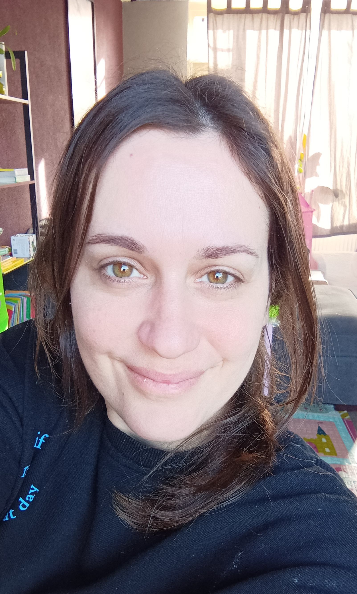

Evi Siafaka
Web Developer

Summary
Enthusiastic and detail-oriented web developer with a passion for creating efficient, user-friendly, and visually
appealing websites.
Very excited to learn the craft. Interested in front-end and back-end technologies,
committed to staying current with industry trends and advancements.
Basically no experience which is why all xp
is welcome, therefore..this resume.
Education
WINC ACADEMY (March 2023 - Present)
- Completed the Back-end development course with Python, currently working on Back-end development with
JavaScript.
UNIVERSITY OF GREENWICH, GREENWICH (UNITED KINGDOM)
- Bachelor of Science with Honours in Psychology
Work Experience
ATTEMA BV, Gorinchem, Netherlands
- Packer (June 2020 - January 2023)
- Held a supervisory role as Head of Production in the packaging department.
- Organized the workspace for a safe and efficient working environment.
- Managed the production team and implemented efficiency improvements.
DISOFO HOME CARE, Utrecht, Netherlands
- Care Coordinator (May 2018 - September 2019)
- Served as a trusted person and ensured the proper execution of care.
- Adjusted the care plan for each client according to their needs.
- Guided staff, handled emergencies, and assisted in the training of interns and new personnel.
NH UTRECHT HOTEL, Utrecht, Netherlands
- Food and Beverage Employee (October 2014 - July 2018)
- Responsible for replenishing minibars in each hotel room and monitoring food and beverage operations.
- Handled customer complaints in a friendly and effective manner.
- Responsible for training new staff.
- Housekeeping Employee (May 2014 - October 2014)
EDEN SMALL MARKETS, Athens, Greece
- Supervisor Cashier (September 2010 - November 2013)
- Provided excellent product information to customers.
- Managed and participated in product orders.
- Maintained good relationships with existing customers and trained new staff.
Skills
- Communication Skills: Clear and effective communication with colleagues and clients.
- Empathetic and Active Listener: Ability to understand the needs of others and listen
effectively.
- Problem-Solving Skills: Actively seeking solutions and employing creative approaches to
address challenges.
- Information Processing: Quickly and accurately processing information to make effective
decisions.
- Internet Research: Proficient in finding and analyzing relevant information on the
internet.
- Organizational Skills: Working in a structured and organized manner to efficiently execute
tasks.
- Training of New Personnel: Experienced in transferring knowledge and skills to new staff.
- Product Information: In-depth knowledge of products with the ability to share this
information effectively.
- Team Leadership: Ability to motivate, coordinate, and lead a team towards common goals.
Languages
- Dutch: Fluent
- English: Fluent
- Greek: Native Speaker